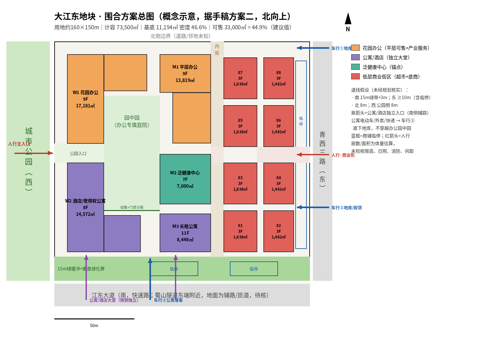
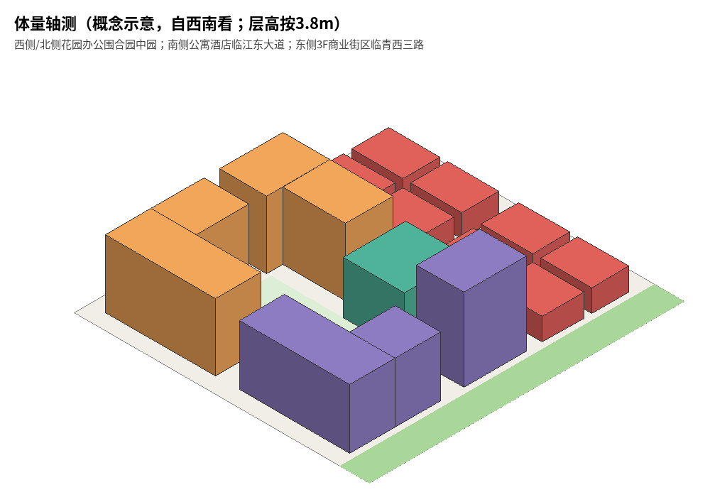

v2 按手稿方案二原方向绘制（左西右东，北向上），替换上一版镜像图。主题口号待定。
推断结论：西侧和北侧做花园办公围合，中间围出办公专用的园中园；公寓和酒店放在临江东大道的南侧，大堂和流线都独立；东侧沿青西三路做 3 层商业街区。计容 73,500㎡ 正好排下，基底 11,194㎡、建筑密度 46.6%（≤50%）。可售建议 33,000㎡ = 44.9%（上限是 49%）。本图是体量估算，限高、日照、退线、消防都没有校核。

退线均为假设：南 15m 绿带+3m，东 ≥10m（含商铺临停），北 8m，西 8m。

| 楼栋 | 层数 / 基底 | 业态 | 计容 | 建议可售 |
|---|---|---|---|---|
| W1 西北L·花园办公 | 9F / 1,909 | 平层办公 17,181（每层可分为 600–800㎡ 单元） | 17,181 | 17,181 |
| M1 北侧Γ·平层办公 | 9F / 1,535 | 平层办公 5,319｜产业服务/共享办公 8,500 | 13,819 | 5,319 |
| M2 泛健康中心 | 7F / 1,000 | 泛健康 7,000（正对公园入口节点，月子/养生朝西侧公园） | 7,000 | 0 |
| W2 西南L·酒店/使用权公寓 | 8F / 1,822 | 精品酒店 6,000（120–150 间）｜使用权公寓 7,500｜大堂底商 500｜配套 572 | 14,572 | 8,000 |
| M3 南侧·长租公寓 | 11F / 768 | 长租公寓 8,000｜配套 448 | 8,448 | 0 |
| E1–E8 商业街区×8 | 3F / 4,160（4×546+4×494） | 超市 6,500（建议放 E1+E2，必要时连通）｜底商 5,500｜配套 480 | 12,480 | 2,500 |
| 合计 | 基底 11,194｜密度 46.6% | 73,500 | 33,000（44.9%） |
分业态核对：平层办公 17,181+5,319=22,500；产业服务 8,500；泛健康 7,000；酒店 6,000；使用权公寓 7,500；长租 8,000；超市 6,500；底商 500+5,500=6,000；配套 572+448+480=1,500；合计 73,500。用地按 160×150=24,000㎡ 估算。
建议可售怎么压到 44.9%：平层办公 22,500 和使用权公寓 7,500 全部出售；底商 6,000 里只卖 3,000（青西三路临街小铺 2,500 + W2 大堂底商 500），超市旁和街区内部的 3,000 自持统一运营。这样留出约 4 个百分点的余量。如果全卖，可售是 36,000 = 49.0%，正好顶格。
事实蜀山隧道西起河庄大道西，东到青西三路，青西三路设有快速出入口（钱塘区政府 2022-04-24）。推断本地块在隧道东端附近，地面主要是辅路和匝道。洞口和匝道的具体位置没有查到，需要现场确认；如果车行③正好落在匝道段，就要改位置。